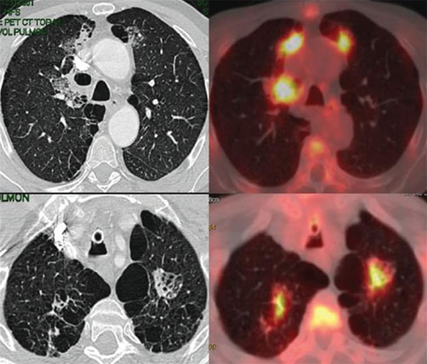

MÓDULO 1 : Carcinoma no microcítico de pulmón : Aspectos generales

1.6 Diagnóstico y estudio de extensión
Estudios iniciales
Inicialmente se recomienda realizar a todo paciente independientemente de su edad:
a Anamnesis y exploración física
Se debe valorar edad, factores de riesgo (tabaquismo, exposición a asbesto, neoplasias previas), enfermedades asociadas, estado clínico del paciente (índice de Karnofsky) y síntomas y signos de enfermedad, especialmente aquellos que sugieran un estadio avanzado o enfermedad metastásica.
c Análisis
Que incluya hemograma, bioquímica general y estudio de coagulación.
d Electrocardiograma
b Radiografía de tórax
Se realiza en los casos en los que no haya sido ésta la prueba que inició la sospecha. Sigue siendo la primera prueba diagnóstica a realizar en el estudio de un CP.
masa en língula:

e TAC helicoidal con contraste de tórax y abdomen superior
Ofrece gran información sobre las características del tumor primario, su potencial extensión locorregional, especialmente a los ganglios mediastínicos y estructuras vecinas como corazón, grandes vasos, esófago, columna vertebral, costillas y paquetes nerviosos y, finalmente, explora la potencial afectación metastásica a distancia de órganos como hígado o glándulas suprarrenales. No obstante, la sensibilidad de la TC para estadificar el mediastino es del 60%, y la especificidad del 81%.
Existe un consenso para considerar una posible afectación tumoral ganglionar cuando el tamaño del ganglio sea superior a 1 cm de diámetro, aunque esta medida es aproximada y puede conducir a error. De ahí la importancia del PET.
masa en LSD:
Diagnóstico de cáncer de pulmón
Para confirmar el diagnóstico de sospecha y conocer la estirpe tumoral disponemos de varias técnicas:
a Broncoscopia
Es la técnica de elección, necesaria en la práctica totalidad de los pacientes en los que se pretenda un tratamiento quirúrgico, pues junto a un alto rendimiento diagnóstico histológico proporciona información útil para el tratamiento (resecabilidad quirúrgica), con un aceptable nivel de tolerancia y morbimortalidad. Su rentabilidad diagnóstica es superior en los tumores centrales. En los tumores endoscópicamente visibles, la rentabilidad diagnostica supera el 90%. En el resto la rentabilidad es menor y puede ser necesario realizar otras técnicas diagnósticas. La punción transbronquial aumenta la sensibilidad de esta prueba, especialmente si hay afectación submucosa o compresión extrínseca por el tumor o adenopatías mediastínicas.
Imagen endoscópica de carcinoma escamoso:

b Punción aspiración con aguda fina (PAAF) bajo control de radioscopia o TAC
Puede ser la primera elección en los tumores periféricos en los que la rentabilidad alcanza el 90%. La complicación más frecuente es el neumotórax, que se produce en un 12-30% de los casos, porcentaje que se relaciona fundamentalmente con el número de pases precisos para obtener material valorable y la coexistencia de enfermedad pulmonar obstructiva crónica en el paciente. Necesitan drenaje torácico entre un 3 y un 15% de los casos.
Corte transversal de una biopsia transtorácica guiada por TC. El diagnóstico anatomopatológico de la muestra obtenida fue carcinoma pulmonar de células grandes:
c Citología de esputo
Es un método de diagnóstico sencillo y no invasivo pero de rentabilidad muy variable. Reservado únicamente para los pacientes que rechazan o son incapaces de tolerar otros procedimientos más agresivos.
d Otros:
• PAAF o BIOPSIA de lesiones metastásicas extratorácicas cuando éstas sean más accesibles que el tumor primario.
• Toracocentesis y/o biopsia pleural cuando exista derrame pleural y el tumor no se pueda diagnosticar mediante las técnicas anteriores.
• Biopsia quirúrgica (mediante mediastinoscopia, mediastinotomía, toracoscopia o toracotomía) cuando excepcionalmente no se alcance el diagnóstico por ninguno de los métodos anteriores.
Estudios de operabilidad
Para su evaluación se recomiendan las siguientes exploraciones:
a Gasometría arterial basal
b Espirometría post-broncodilatadora y Estudio de difusión pulmonar (DLCO)
• En pacientes con FEV1 superior a 2 litros (o > 80% del predicho) y DLCO superior al 60% el tumor se considera operable y no son precisos otros estudios funcionales pulmonares.
• En presencia de FEV1 entre 1 y 2 litros (o entre 60% y 80% del predicho) o DLCO inferior al 60% se deben calcular el FEV1 predicho postoperatorio (FPP) y el DLCO predicho postoperatorio (DPP).
Estudios de resecabilidad / extensión
Para su estudio se recomienda realizar las siguientes exploraciones:
Carcinoma no microcítico de pulmón
a Gammagrafía ósea
En pacientes que presenten dolor óseo no directamente dependiente del tumor.
b TAC cerebral con contraste y/o RNM cerebral
• Se recomienda la realización de Tac o RM craneal en pacientes con síntomas o signos de afectación del Sistema Nervioso Central, así como en pacientes con estadio III asintomáticos en los que se considere la posibilidad de tratamiento local agresivo (cirugía o QT- radioterapia).
• La RM es más precisa que el Tac en la detección de metástasis cerebrales.
TAC cerebral con contraste y/o RNM cerebral:
c RNM torácica
En pacientes en los que tras la realización de TAC torácico existan dudas sobre la infiltración de estructuras vasculo-nerviosas, especialmente en los tumores del sulcus superior o de localización paravertebral.
d Ecografía y/o TAC hepática
En pacientes con hepatomegalia y/o alteración enzimática hepática valorando en función de los hallazgos la necesidad de punción-aspiración transparietal con aguja fina.
e Estudio de masa suprarrenal
Estudio de masa suprarrenal: toda masa suprarrenal superior a 2 cm debe ser estudiada para descartar metástasis mediante técnicas específicas (TAC, RNM, PET y/o PAAF).
f Estudio de otros nódulos pulmonares
En general se debe hacer un estudio etiológico de todo nódulo asociado al tumor. Si el estudio anatomopatológico confirma que se trata de una metástasis y el nódulo se encuentra en el mismo lóbulo que el primario se clasifica como T4 y el tumor se sigue considerando resecable. Los nódulos en otras localizaciones se valorarán individualmente.
g Toracocentesis y/o biopsia pleural
Indicadas cuando exista derrame pleural en tumor potencialmente resecable. La observación de derrame pleural mínimo en TAC, no visible en Rx simple, no precisa de estudio.
h Toracocentesis y/o biopsia pleural
Indicadas cuando exista derrame pleural en tumor potencialmente resecable. La observación de derrame pleural mínimo en TAC, no visible en Rx simple, no precisa de estudio.
i PET-TAC
Se recomienda en todos los pacientes con tumores operables y resecables antes de una toracotomía con intención curativa.
Esta exploración es extremadamente útil para descartar metástasis a distancia y realizar una valoración mediastínica en una única exploración, pudiendo evitar la realización de gammagrafía osea, eco y/o TAC hepática, estudios sobre otros nódulos pulmonares e incluso el estudio de derrame pleural.
Carcinoma microcítico de pulmón
En todos los estadios se precisa confirmar la ausencia de metástasis con TAC toracoabdominal, TAC cerebral con contraste y/o RNM cerebral, gammagrafía ósea o PET.
Estadificación clínica del cáncer de pulmón
La estadificación del CP pretende establecer la situación de un tumor de acuerdo con el patrón habitual de diseminación de esta neoplasia, y para ello utiliza el sistema TNM. De esta forma, toda la comunidad internacional puede clasificar a los pacientes con cáncer de forma similar.
Inicialmente, la clasificación TNM fue propuesta en 1946 por Denoix, y es actualizada periódicamente mediante reuniones de consenso entre las principales organizaciones implicadas, como la American Joint Committee on Cancer (AJCC), la Union Internacional Contra el Cancer (UICC), la American Thoracic Society, la International Association for the Study of Lung Cancer o el Comité Japonés del Cáncer.
Importancia de la estadificación:
Identifica la extensión de la enfermedad
Determina el pronóstico
Dirige la estrategia terapéutica
En el 2015, se hizo la última actualización de la clasificación TNM (8ª edición) por la International Association for theStudy of LungCancer (IASLC).
El parámetro “T” se define por el crecimiento del tumor primario en tamaño, dentro del parénquima pulmonar, o su extensión a estructuras vecinas como pleura, costillas, columna, esófago, corazón, grandes vasos, tráquea y mediastino.
El parámetro “N” describirá la afectación ganglionar hiliar o mediastínicaipsilateral o contralateral al tumor.
El parámetro “M” hace referencia a la presencia de tumor a distancia o metástasis.
Los “nódulos satélites”, situados en el mismo lóbulo que el tumor primario, se clasifican como T3. Sin embargo, los nódulos que se localizan en cualquier otro lóbulo del mismo pulmón deben considerarse T4 y en el pulmón contralateral como metástasis y, por lo tanto, M1a.
Si existe derrame pleural o pericardio debe considerarse como M1a de entrada, a pesar de que la citología del mismo sea negativa. Únicamente se reconsideraría la situación si el estudio citológico fuera negativo para malignidad y hubiera datos clínicos para considerar una etiología no neoplásica del derrame.
La parálisis de las cuerdas vocales, por afectación de la rama recurrente del nervio laríngeo, la obstrucción de la vena cava superior, la compresión de la tráquea o del esófago pueden producirse por la extensión directa del tumor primario o de los ganglios linfáticos. Suelen asignarse dentro de la categoría T4 o N2-N3 y, por lo tanto, se incluyen en el estadio IIIB.
Diferencias entre la clasificación TNM7 y TNM8:
Clasificación TNM:
Estadios según TNM8:
Supervivencia según estadio en la clasificación TNM7 y TNM8:
La mayoría de los pacientes se diagnostica en estadios avanzados, donde la tasa de curación es muy baja, de ahí su elevada mortalidad.
Carcinoma no microcítico de pulmón. Estadio al diagnóstico: